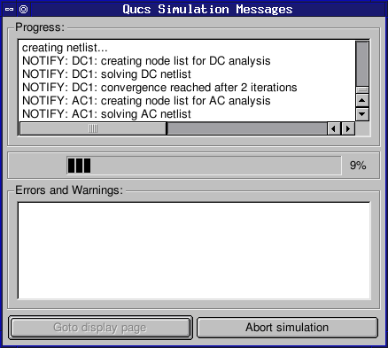

Miscellaneous screenshots
The screenshots below show miscellaneous dialogs and menus. Component pull-down menu. |
 Simulation in progress. |
 Diplaying the simulation logfile. |
|
Diplaying the simulation netlist. |
|
 Internal help system. |
|